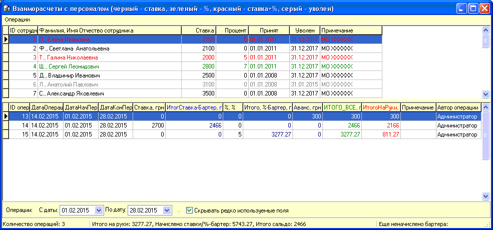
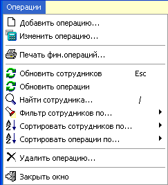

Окно "Взаиморасчеты с персоналом" позволяет для
персонала справочника "Сотрудники", согласно назначенных им схем оплаты
труда, вести начисление и учет выплат.
Форма состоит из двух частей: в заголовке
содержится список сотрудников, в нижней части формы - список операций по
указанному вверху сотруднику. Также
в заголовке окна содержится подсказка, какие цвета шрифта в верхней части
окна соответствуют какой схеме начисления оплаты труда.

Внизу окна находится фильтр отбираемых операций с
даты по дату.
Главное меню "Операции" предоставляет следующие
возможности (часть функций дублируется в контекстных меню верхней и нижней
части формы), рассмотрим их подробнее по пунктам.

Добавить операцию... и Изменить операцию... -
открывает отдельное окно для выбора необходимых параметров расчета
операции оплаты и добавляет/изменяет такую операцию (смотрите отдельный
подраздел справки "Добавить / Изменить выплату").
Печать фин.операций... - открывает
предварительный просмотр вывода на принтер финансовых операций выделенного
сотрудника за указанный период.
Смысл остальных пунктов понятен из их
наименования.